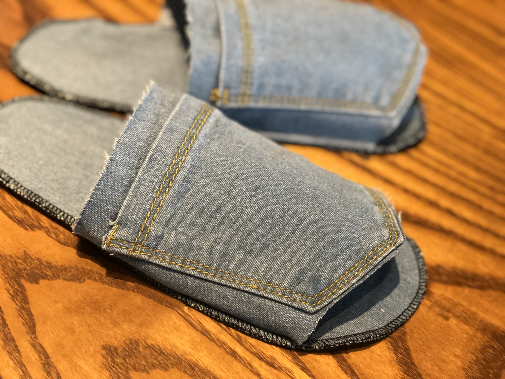
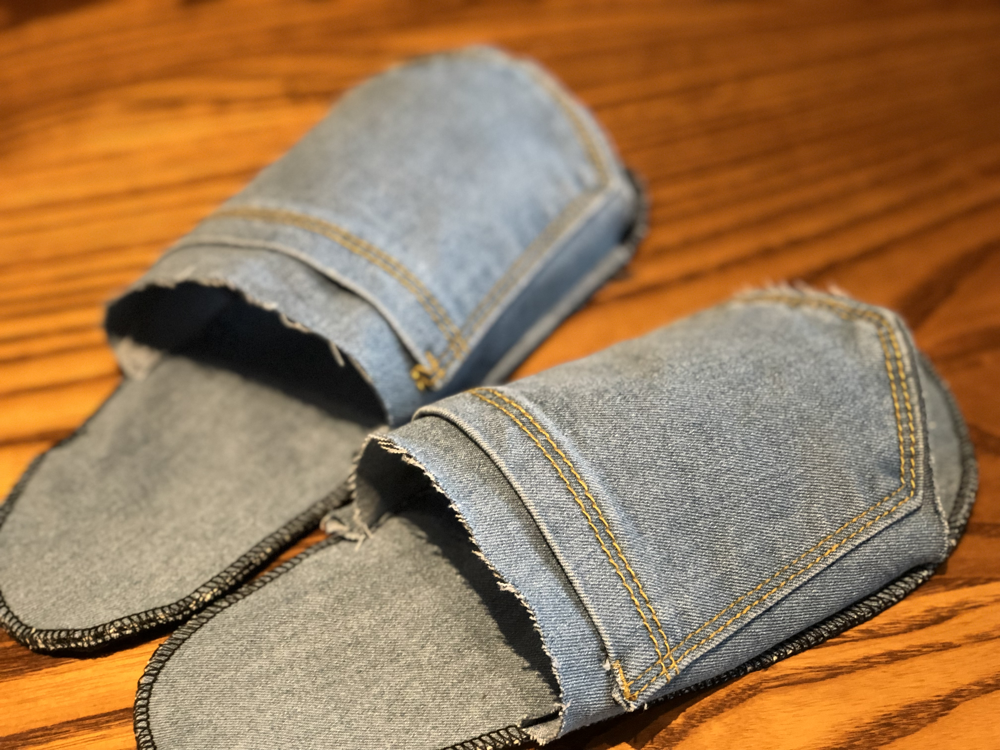
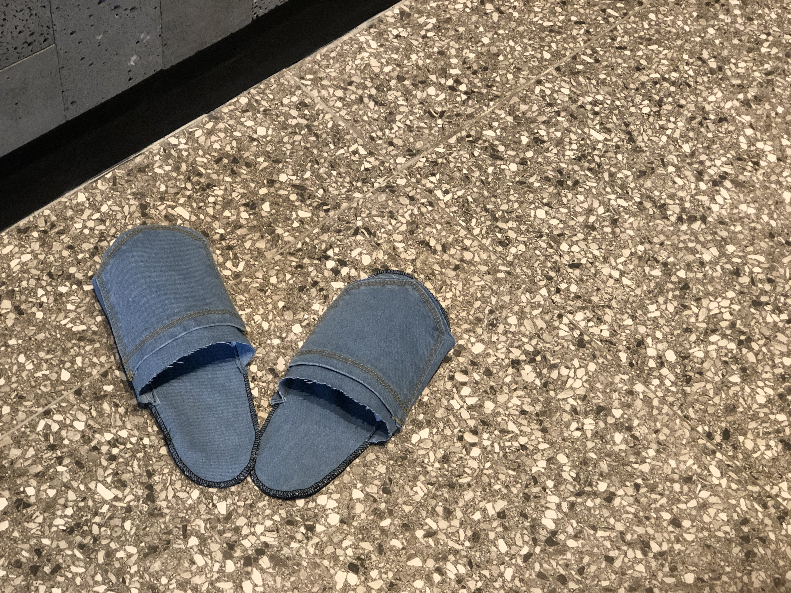
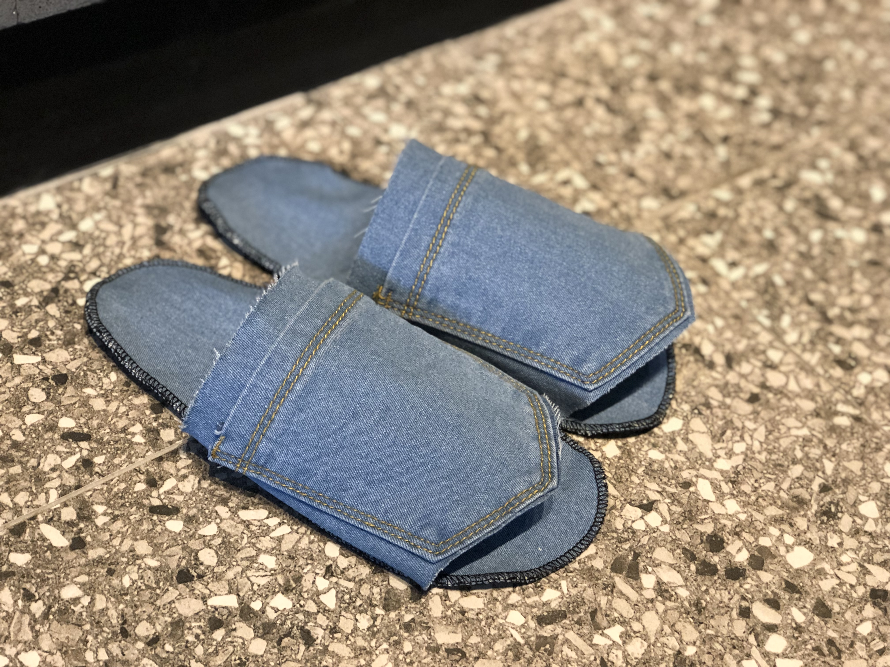

환경을 생각하는 소비자의 마음에서 탄생한
진짜! 업사이클링 슬리퍼 :)

기존 업사이클링 슬리퍼는 판매가격이 기본 20,000원이 넘습니다. 저도 환경을 생각하는 제품은 많이 사용하는 편이나 이 가격은 부담스러울 수 밖에 없습니다. 또한 이 제품들은 업사이클링 제품이라고하나 슬리퍼의 밑창과 장식 등은 새 제품을 사용함으로써 상품의 값어치를 올렸습니다.
그래서 저는 제가 직접 제작해보았습니다. 더 이상 사용할 수 없는 청바지나 의류만 사용하여 만든 리얼 업사이클링 슬리퍼. 업사이클링보다는 리폼에 가깝다고 생각할 수 있지만 그것을 추구합니다.
사용후기+사진
처음 제작하는거라 위에 덮는 부분을 짝짝이로 해버려서 조금 티가 나지만 다른 문제는 없습니다.★
재료값: 0원 / 수선집 미싱의뢰비: 3,000원(제작시간: 3분)
직접 미싱으로 제작한다는 가정하에 제작시간 최소 3분을 생각하면 한 켤레 4,990원은 아주 적당.
가격 : 한 켤레 4,990 두 켤레 9,900
--> 옵션 10,000원 선택시 100원은 환경보호 캠페인에 적립!
청바지 뒷 주머니 모양을 그대로 살려 업사이클링 슬리퍼에서만 볼 수 있는 디자인을 보여준다.
<기능사진>


청 그대로의 느낌이 있다. 최대한 청바지의 선을 살리고 청바지와 헌 옷들을 여러겹 겹쳐서 만들어 바닥의 한기가 올라오지 않게 만들었고 아웃라인 미싱을 하면서 겹겹이 분리될 일도 없다.
<재료사진>


재료도 간단했다. 더도 말고 덜도 말고 더 이상 쓰지 못하는 청바지와 옷만 있으면 빨아서 재사용이 가능한 환경 친화적 실내화가 완성된다.
진짜 팔 수 있을 것 같다.
기획안 보완
- 가격
한 켤레 4,990 / 두 켤레 9,900
옵션, 총 10,000원 선택시 100원은 환경보호 캠페인에 적립! (이 밑에 지금까지 얼마나 적립되었고 적립자가 설정한 별명이 쭉 지나간다. -->상품을 봤을 때 가격이미지도 같이 떠오를 수 있도록. 상품=가격
- * (업사이클링)실내화가 필요한 이유! (어필하기)
- 자취방 바닥의 한기가 내 발을 타고 뼛속까지 전해질 때!
- 난방비 아끼고 싶을 때!
- 환경을 생각하는 소비가 하고 싶을 때!
- size
남자 : 길이 약28cm / 250~280
여자 : 길이 약26cm / 220~245
- 도안제공(업사이클링 슬리퍼 만드는 방법)
--> 저희 ○○은 ‘환경’과 ‘여러분의 필요’를 최우선으로 합니다: 실제 저희가 사용하는 도안을 제공함으로써 소비자를 생각하고 환경을 생각합니다.
- 만들어지는 과정.
- 제품 의의: 환경을 생각하는 소비자의 마음에서 만들어진 제품.
- 업사이클링, 에코에 관한 이미지+글(?)
- 장점
세탁해서 다시 신을 수 있다. (기존 상품. 먼지가 껴서 더러워짐, 빨지 못하는 제품) * 세탁기호 표기
저렴한 가격.